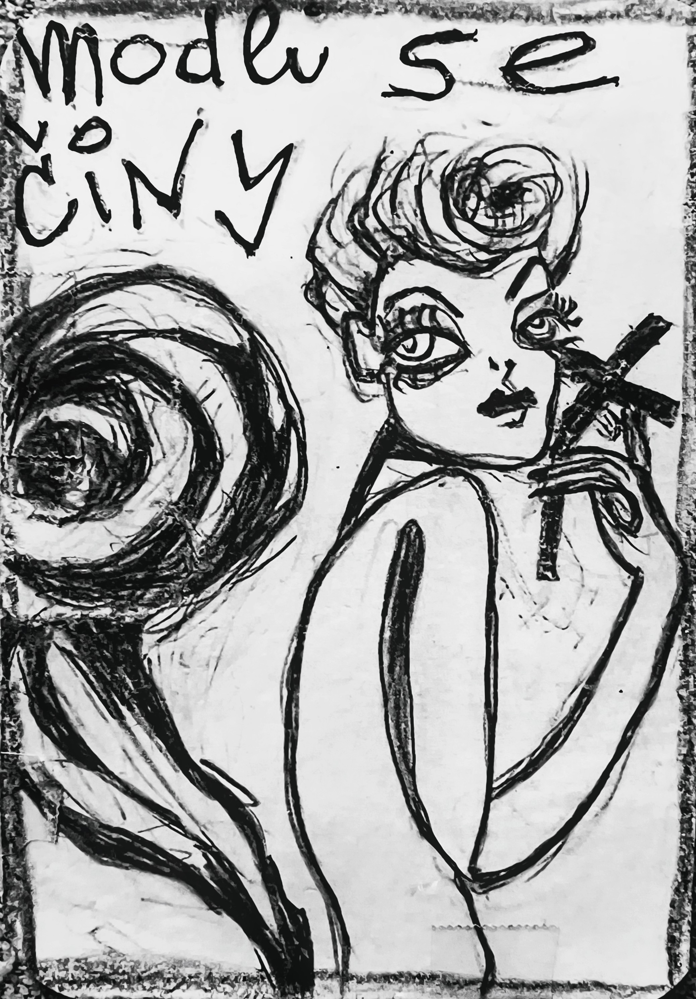

ilustrace · veverkaFyzika jazyka · Karta Veverka
„Modli se činy."
Veverka běžela. Ne kvůli něčemu. Ne od něčeho. Běžela, protože to bylo potřeba. A když to nebylo potřeba, tak to bylo možné. A když to nebylo možné, tak to bylo aspoň směrem. Oříšek. Díra. Zahrabat. Zamaskovat. Zamrkat. Znovu. Nikdy nemluvila. Ale když se na ni někdo podíval, měl pocit, že mu právě něco řekla. A že to bylo důležité. A že to bylo na něj.
Pohádka · čtěte pomalu
Přejeďte myší přes podtržené místo pro popis figury. Kliknutím na figuru v tabulce se označí v textu.
12 úhlů pohledu
Odpovězte rychle, bez opravování. Hledáme váš přirozený úhel pohledu.